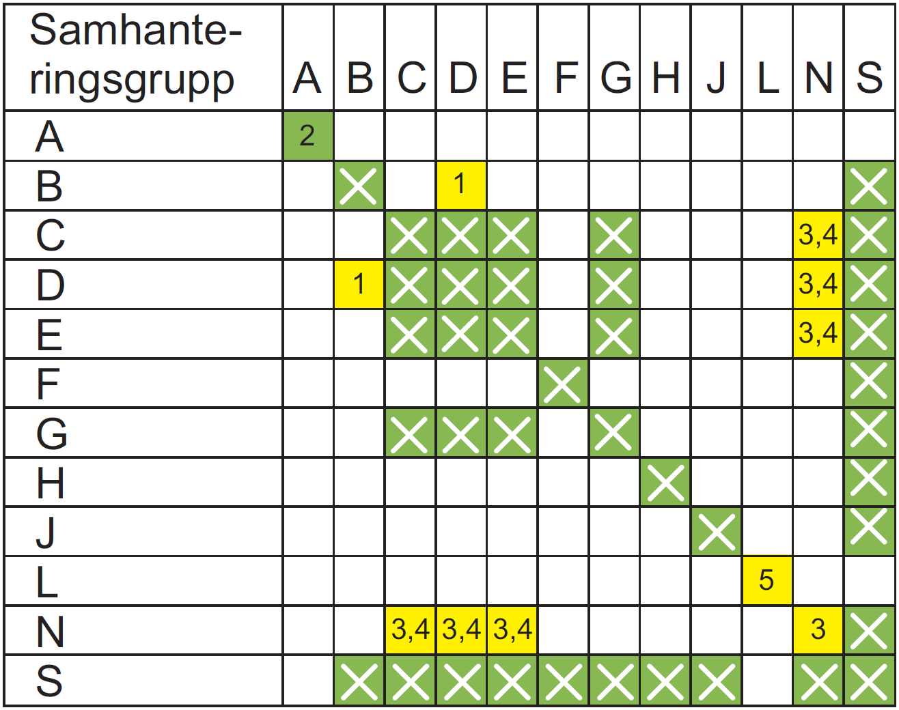

Utdrag ur SäkI Tp Farligt Gods, 2013 års utgåva.
Kollin som innehåller explosiva ämnen eller föremål i klass 1, märkta med etikett nr 1, 1.4, 1.5, 1.6 utom etikett 1.4 med samhanteringsgrupp S får inte lastas på samma fordon som kollin som innehåller farligt gods från övriga klasser.
För följande etikettkombinationer gäller särskilda bestämmelser: etikett 1 och 4.1 (brandfarliga fasta ämnen) får endast samlastas med kollin som är märkta med samma etikettkombination, inget annat farligt gods. Etikett 1 och 5.2 (organiska peroxider) får endast samlastas med kollin som är märkta med samma etikettkombination och kollin märkta med enbart 5.2, inget annat farligt gods.
Kollin som är försedda med etiketterna 1, 1.4, 1.5 och 1.6 och som tillhör olika samhanteringsgrupper i klass 1, får endast samlastas på ett fordon om det tillåts enligt bilden nedan.
Samlastningsbestämmelserna gäller för ett fordon. Detta innebär till exempel att de kollin som inte får samlastas med andra kollin på ett fordon, kan fördelas mellan bil och släp på en transportenhet.
1. Kollin med föremål i samhanteringsgrupp B och kollin med ämnen och föremål i samhanteringsgrupp D får samlastas i ett fordon eller i en container, förutsatt att de är effektivt åtskilda, så att det inte finns någon risk att en detonation överförs från föremål i samhanteringsgrupp B till ämnen och föremål i samhanteringsgrupp D. Separationen ska verkställas genom användning av skilda utrymmen eller genom att ett av de två slagen av explosiva ämnen eller föremål placeras i ett särskilt inneslutningssystem. Båda separationsmetoderna ska vara godkända av behörig myndighet.
2. Tillåts inte vid järnvägstransport.
3. Olika slag av föremål i klass 1.6N får samlastas som föremål i klass 1.6N endast om det visats genom provning eller analogislutsatser att ingen extra detonationsrisk genom överföring föreligger bland föremålen. I annat fall ska de behandlas som föremål i riskgrupp 1.1.
4. Om föremål i samhanteringsgrupp samlastats med ämnen eller föremål i grupp C, D eller E, ska föremålen i grupp N behandlas som om de hade egenskaper enligt grupp D.
5. Kollin med ämnen och föremål i samhanteringsgrupp L får samlastas i ett fordon eller container innehållande kollin med ämnen och föremål av samma slag i denna grupp.